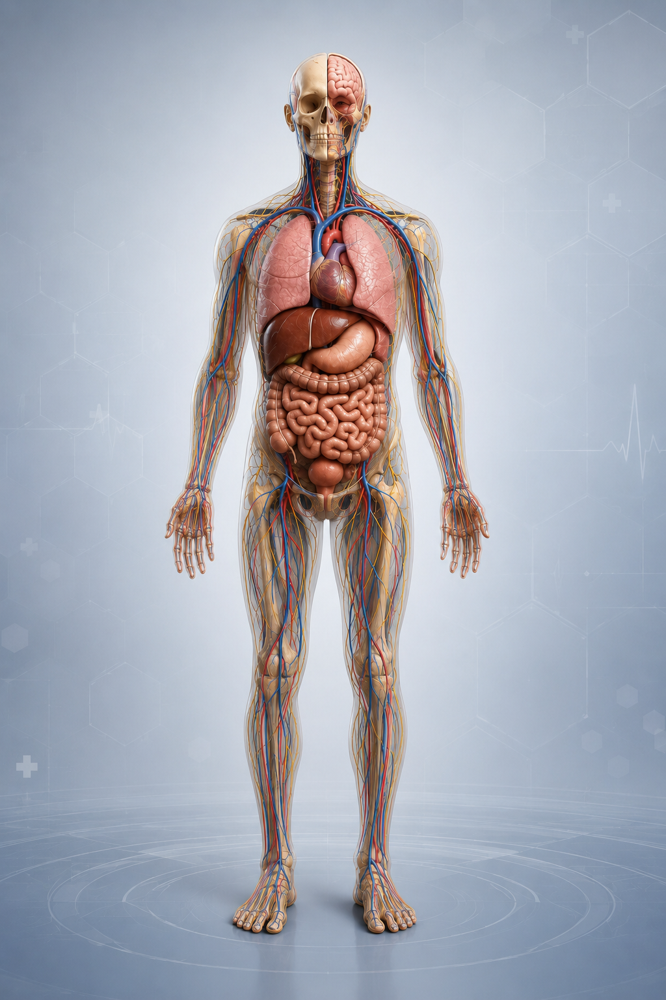
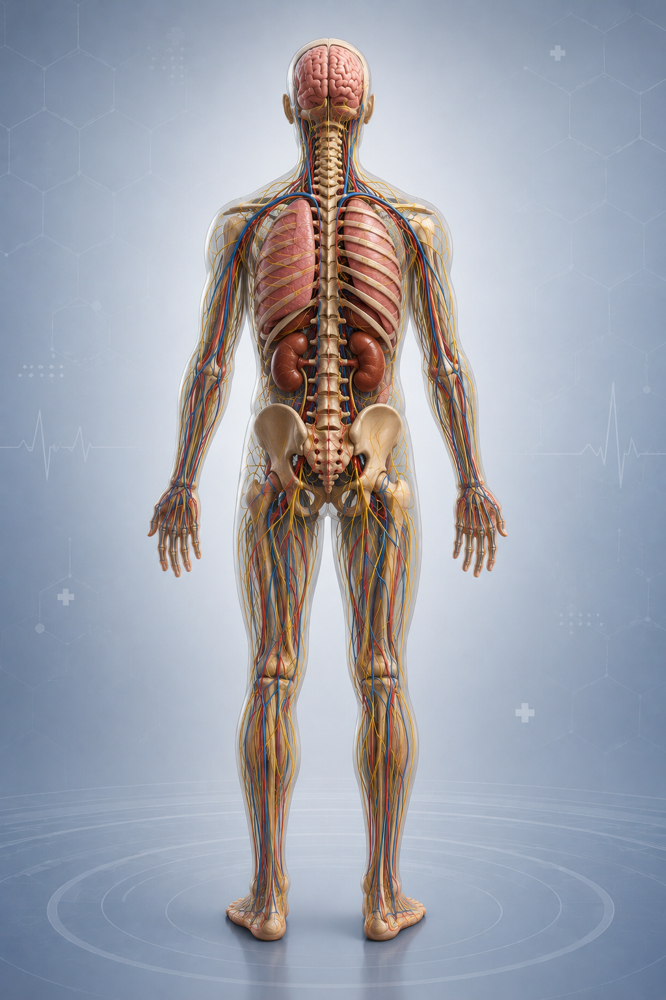

Krah
Ku është problemi?
Zgjidh zonën e saktë në krahun tënd.
Mendo si mjek
Si funksionon?
Kliko në zonën ku ndjen problem.
Përgjigju disa pyetjeve të thjeshta.
Merr orientim mbi problemin e mundshëm.
Konsultohu me mjekun për diagnostikim të saktë.
Drejtimet mjekësore
Nga Dermatologjia deri te shërbimet diagnostike dhe mbështetëse.
Kirurgji
Degët kirurgjikale lidhen me zonën e zgjedhur dhe shenjat alarmuese.
Radiologji
Radiografi, CT, MRI, ultrazë dhe ekzaminime të tjera sipas problemit.
Sëmundje
Akute, kronike, infektive, inflamatore dhe degenerative.
Ekzaminime
Rutinore, primare, sekondare dhe të avancuara.
Artikuj mjekësorë
Artikuj edukativë me linke që mund të ndahen në rrjete sociale.
Pyetje të shpeshta
Pyetjet që pacientët klikojnë më shpesh në navigator.
Rreth nesh
D Health Medical Navigator është ndërtuar për orientim edukativ para konsultës mjekësore.
Platforma nisi si mënyrë e thjeshtë që pacienti të përshkruajë problemin me trupin, simptomat dhe drejtimin mjekësor.
Qëllimi është edukimi, zgjedhja më e mirë e ekzaminimit dhe drejtimi te specialisti i duhur.
Navigatori nuk vendos diagnozë përfundimtare. Vendimi klinik bëhet nga mjeku pas vizitës dhe ekzaminimeve.
Raport paraprak AI
Mund të lidhet me
Ekzaminimet dhe specialisti
Specialisti i rekomanduar
Cili ekzaminim jep informacionin më të mirë?
| Problem | Radiografi | CT | MRI | USG |
|---|